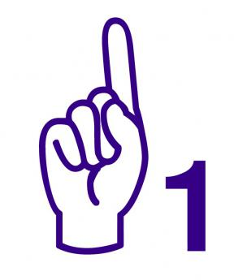
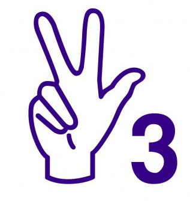

| Numero | Imagen | Descripcion |
| 1 |  | Utilizo una mano. Levantar el dedo indice. Apuntar con la palma de la mano a la cara de uno mismo. Mano en posicion vertical al cuerpo. |
| 2 |

|
Utilizo una mano. Levantar el dedo indice y el mayor. Apuntar la palma de la mano al exterior. Mano en posicion vertical al cuerpo. |
| 3 |  | Utilizo una mano. Levantar el dedo indice, el mayor y el pulgar. Apuntar la palma de la mano al exterior. Mano en posicion vertical al cuerpo. |